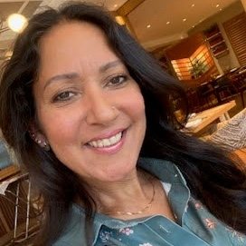
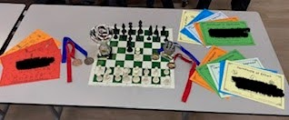

Welcome to United Knights
Hello, my name is Fai Ally and I am extremely passionate
about teaching chess to children in Primary Schools in a fun and exciting way!
Inspired by my daughter who had many challenges throughout her chess journey in
her primary years and can proudly say she held the title - UK18 Girls Chess
Champion for England for 5 years Nationally and Internationally.

Throughout my journey as a parent, it was an eye opener to witness many disappointed
children who worked so hard and would like to achieve a title; or win 1st, 2nd or 3rd
place or any type of award or trophy … so I wanted to make that change by teaching
chess in a fun and exciting way through encouraging and motivating children to learn
how to play chess and rewarding them when they deserve to be rewarded! Having fun … it’s the best way to learn!
Our Chess Club Services which we find genuinely unique – includes learning tactics, strategies
and developing their knowledge in playing chess. The children will build their competitive spirit
and confidence in no time and will experience different ways of playing real time chess over the
board so they engage.

Nothing like a bit of fun with one of our Termly Chess Tournaments as well as accumulating points
earned to reach the United Knights Levels from Pawns to King ... collecting certificates, stickers
and chess pieces on their dedicated keyring along the way!
Playing chess games with other children will give them the ability to practise what they have learned
and enables children to work at their own pace with no additional pressure. We match like for like so
it’s not overwhelming for any child. Slowly but surely, you will notice the great benefits your child
has gained as demonstrated below.
Let's see what some of the children have to say!
"Trying to attack the King is really fun and there are so many ways to do it!" John
“You can really think about your tactics and strategies … and you think you have your plan but it changes with every single move!” Amren
“Playing chess with different people is really interesting” Emma
“It’s a perfect sport for me … I don’t care if I lose or win … playing chess still makes me happy and I will only get better in my next game” Vsevalod
“There’s loads of pieces and they all move differently … it’s really fun to learn about it” Lily
“I really like the league table and the trophy and chess badge that’s given out every week!” Ethan
“It’s a happy environment to be in … it’s not too serious like the formal chess tournaments … that’s what I love about this chess club!” Everett
“I like coming to Chess Club because it relaxes me!” Joe
United Knights offer to make every single session exciting and motivating for each unique child…
no matter what their chess ability is; special or medical needs are!
Learning Chess the Fun and Rewarding Way!
We're not just teaching a game — we're shaping confident, strategic thinkers one move at a time. Chess
is more than just a board game and is a three part process from beginning to end - the basic play and
opening, the middle and the end game. It's a brilliant way for children to learn focus, patience,
resilience, and critical thinking. That’s why we’re proud to offer a unique chess coaching program
that makes learning fun, competitive, and deeply rewarding.
Why Chess?
When children play chess, they’re developing valuable life skills without even realising it.
Our sessions are designed to create a vibrant, encouraging environment where every child —
regardless of their starting point — can grow, learn, and shine!
What Makes United Knights Chess Clubs Special?
We’ve designed our coaching to be as engaging as it is educational:
ü߆ Tactics and Strategy First ‚Äì Every session begins with a new chess concept, tactic, or strategy. Children are encouraged (and rewarded!) for applying what they've learned in their games.
üèÖ Positive Points System ‚Äì Win or not, every child earns points in each game. This ensures that effort, learning, and participation are always recognised.
üèÜ Termly Tournaments ‚Äì At the end of each term, we host a variety of exciting tournaments. Prizes include engraved Trophies for Champions, shiny Silver and Bronze Medals handed out during school assemblies and Certificates handed out in the Chess Club sessions.
üåü Player of the Week ‚Äì Each week, we spotlight one child for their effort, improvement, or sportsmanship ‚Äî because we believe every child deserves their moment.
ü§ù Inclusive Play ‚Äì Children are paired by ability, not age or grade, so everyone competes on equal footing and develops at their own pace, pressure-free.
♟ The Levels System – Our fun progress tracker lets children work their way up from Pawn to King, earning certificates and collectible chess piece keyrings along the way!
üè´ Beyond the Club ‚Äì We support children in taking part in school and inter-school competitions, helping them grow in confidence and represent their school with pride.
Learning Through Play
More than anything, we believe learning happens best when it’s fun. Our club is a place where
friendships are formed over the chessboard, laughter is heard between rounds, and every child
feels valued — whether they’re learning their first moves or refining their opening gambits.
Ready to Join the Chess Fun?
If you’d like your child to be part of something both fun and enriching, our chess club is
the perfect place to start. Let’s give them the chance to play, learn, and grow — all through
the beautiful game of chess! Simply click on the link United Knights to access your child(ren)'s school for
Enrolment. Please ensure you select the right school for your child.
Currently, we offer Before School, Lunch-Time and After School Chess Clubs within St Albans, Welwyn Garden City, Hatfield, Wheathampstead, Bricket Wood and Hemel Hempstead namely,
- St Albans High School for Girls Preparatory
- Colney Heath JMI School
- Mount Pleasant Lane School
- Infants School
- Two Waters School
- Alban City School
- Hatfield Community Free School
- St Peter’s School
- Applecroft School
- Redbourn School
- St Philip Howards Catholic School
- St. John's CofE Primary School
Chess Club Sessions
Want to know more in detail about how exciting our Chess Club Sessions are?
Please click on this link to find out!... Our Chess Club Sessions
Enrolment
We use Class4Kids - one of the safest platforms for Parents to enrol their Child(ren) onto
one of our Chess Clubs at their School. You will need to create an Account with Class4Kids
if you do not already have one. Simply click on the link United Knights to access your Child(ren)'s
School for Enrolment. Please ensure you select the right school for your child.
Primary Schools
Would you like United Knights to offer our Chess Club at your School? Please ping me an email: admin@unitedknights.co.uk
of your request and we’ll get it up and running as soon as you say let’s go! Have a look at our page Want a Chess Club? for more information.
United Knights would love the opportunity to offer our Chess Club Services in your Primary School. Whether it be for a Before School, Lunch-Time or an After School Club, we’ll make it work!
We have Everything in Place
- Our Staff are DBS Advanced Chess Coaches
- Public Liability Insurance set at £6m
- Public Employers Liability set at £10m
- Safeguarding Policy
How we Run our Sessions
Here is a giudeline of what United Knights offer:
- Chess topics are explained and points are awarded when applied in their game.
- Points are awarded per game and are reflected in the league table; every child earns points even if they lose their game; a child works towards the United Knights Levels from Pawn to King earning keyrings and certificates along the way!
- In addition, Chess Tournaments are also run per Term; Awards and Certificates are given out respectively in School Special Assembly at the end of the Term.
- Player of the Week Award is given out to a Child who deserves it - we aim for every child to receive it within the chess club.
- We cater for all abilities; players play like for like so that every child develops according to their own pace - no pressure.
- We encourage and prepare the children to participate in different individual and/or inter-school and external chess competitions (entry costs may apply). The children will have the opportunity to play in a chess tournament to represent their school.
- A vulnerable child’s place is given for free subject to no classroom / dining hall hire fees per term.
- We provide our own equipment and learning materials.
- We have our own literature, generally our Enrolment Flyer to be email out to the Parents / downloaded on the School Website.
- We manage all Admin / Enrolments / Payments via Stripe / Waiting List.
- Costs per session vary depending on what is required.
When the Clubs Run
Our Chess Clubs run during School Term Time only.
- Any weekday Before School: 07.45 - 08.45 (Can accommodate to suit school timings)
- Any weekday Lunch Time in School: 12.00 - 13.00 (Can accommodate to suit school timings)
- Any weekday After School: 15.20 - 16.20 (Can accommodate to suit school timings)
Make it Happen!
Would you like United Knights to offer our Chess Club at your School? Please ping me an email: admin@unitedknights.co.uk
of your request and we’ll get it up and running as soon as you say let’s go! Have a look at our page Want a Chess Club? for more information.
MAKE YOUR MOVE
Inspire Young Minds Through the Beautiful Game of Chess
We are looking for enthusiastic, committed individuals to join our team of Chess Coaches.
You don’t need to be a chess expert—what we’re looking for is a passion for teaching and
a love for working with children. If you have the energy to inspire and the drive to create
a fun, educational environment, we want to hear from you! This is a rewarding opportunity
to make a real difference in young people’s lives.
Why Join United Knights?
- Be part of a growing network making a positive impact on young lives.
- Enjoy flexible working with our Before School - 08.00am to 08.45am and After School Clubs vary between 15.00pm to 16.30pm during Term Time ONLY (minimum 30 weeks in an academic year).
- The Chess Club runs for one hour per week per school... or run more than one school - the choice is yours!
- Access high-quality training and resources.
- Receive competitive rate of pay starting at £30 per session and support for your development if needed.
We welcome applications from Grandparents, Parents, University Students and Adults aged 19+
looking for part-time work during school term time. Please note: Only apply if you are a British citizen.
All our chess coaches are self-employed. All Chess Coaches will require an Enhanced DBS check. If you
don’t already have one, United Knights can apply for one on your behalf. If you have lived outside the
UK in the last five years, you will also need to provide a criminal record certificate from each country
where you have lived.
About the Role
As a United Knights Chess Coach, you will:
- Deliver engaging weekly sessions during either before-school, lunchtimes or after-school clubs in Primary Schools.
- Foster a positive and inclusive environment where children are encouraged to develop critical thinking and problem-solving skills whilst having fun!
- Be provided with materials and guidance with detailed lesson plans, worksheets, and handouts to ensure a productive and engaging session is delivered each and every single time!
- Help children develop skills in critical thinking, problem solving, and resilience through chess and benefits they get to carry throughout the rest of their lives.
- Create an inclusive, encouraging and fun learning environment every single session … we’ll have it no other way!
Training & Support
We provide all the training you need to feel confident and prepared, including:
- Shadowing a Chess Coach during a live session and delivering it under supervision
- Ongoing support from the United Knights Team; always here to answer any queries
- Every half term meetings to ensure smooth running of the Chess Clubs
- Weekly updates
What We are Looking For
- Enthusiasm is key for teaching and working with children (basic chess knowledge is needed and expertise is a bonus but not required!)
- Good communication and organisational skills
- Experience working with children in any setting is helpful, but not essential
- Reliability, punctuality, observations to ensure children's safe-guarding and a professional attitude at all times
Interested in inspiring the next generation through chess?
We'd love to hear from you!
We've made our move.
You make yours.
Apply Now
2nd United Knights Primary Schools Chess Tournament
Following the great success of our 1st United Knights Primary Schools Chess Tournament,
held in March 2025 at Mill Green Golf Club located in the middle of Hatfield and Welwyn
Garden City, where all primary children were invited from local Primary Schools;
we will be running our 2nd one held on Sunday 19 October 2025 limited to 100 places!
DEADLINE FOR ENROLMENT: FRIDAY 17 OCTOBER 2025
Only £20 for a whole day of 5 Chess Games plus cash prizes… one not to be missed!
Pictures are from the 1st United Knights Primary Schools Chess Tournament on Saturday 15 March 2025
Scroll down to get easy access to:
- The link to enrol
- QR code to enrol
- Food Menu (please order in advance)
- Prizes
- Venue
- Timings
- Tournament Rules
Nothing like a bit of fun with our Traditional Chess Tournament for Primary Children!
Take a day break from whatever activity they have on this day to take part! Deflate the football;
take the batteries out of the remote control consoles and let our children PLAY CHESS!!!
Allow them to use the power of their minds; think and create moves ahead of their game;
gain benefits that are carried throughout their lifetime; build their competitive spirit
and confidence in no time and gain the experience of playing real time chess competitively
over the chess board so they engage with like minded players as well as accumulating points along the way!
What a fun way to learn!
Enrolment
Enrol your Child to avoid disappointment by either clicking on this Link or the QR Code below:
Food Menu
As we aim to better the overall experience for parents and children, the Venue has prepared a Special Menu to cater for the demand.
Please click on the link below to order and prepay for your food in advance.
Adults - kindly specify vegetarian or non vegetarian in the Dietary text box before continuing to payment.
The deadline for food orders is Sunday 12 October 2025.
Kids Buffet - £15
Sandwiches on White or Brown Bloomer
Egg Mayonnaise | Cheddar Cheese | Strawberry Jam | Ham
Chicken Goujons | Fish Goujons | Spiced Wedges | Margarita Pizza Slices
Kids Food Form
Adults Meal - £15
Homemade Chilli Con Carne with Steamed Rice or
(Veg) Homemade Chilli Con Carne with Steamed Rice and Nachos
Adults Food Form
Prizes
Pictures are from the 1st United Knights Primary Schools Chess Tournament on Saturday 15 March 2025
1ST PLACE TROPHIES / U11’s - £100 / U8’s £50
2ND PLACE - U11’s and U8’s SILVER ENGRAVED MEDALS
3RD PLACE - U11’s and U8’s BRONZE ENGRAVED MEDALS
£25 BEST BOY/GIRL (If not in Top 3)
Venue
The Club at Mill Green (Golf Club)
Gypsy Lane
Hatfield
Welwyn Garden City
AL7 4TY
Mill Green Venue
Google Maps
Set in over 200 acres of Hertfordshire countryside, this Venue is the perfect place to run our Chess
Tournament as it offers a large hall; off road parking, a Catering Bar offering a special menu and
hot / cold drinks for children as well as parents and even play or practice a game of golf whilst
you're there!
SPECIAL NOTES:
While outside the playing hall, parents or guardians are fully responsible for their children during the
tournament. The organisers and helpers are not able to act “in loco parentis” and are not able to take
responsibility for any child’s actions, or for the actions of anyone that may affect your child. We also
stress for your child to not allow them to walk around the golfing area as they could get hurt with a
flying golf ball! This Venue kindly requests to not bring any food or drinks from outside on the premises
as the food can be ordered in advance and the drinks are available on site.
Timings
We will endeavor to stick to the times planned however as we can appreciate, reasons beyond our control may cause some delays.
09.30 REGISTRATION
10.00 ROUND 1
10.30 BREAK
10.50 ROUND 2
11.20 BREAK
11.40 ROUND 3
12.10 LUNCH
12.30 QUESTION TIME WITH FORMER UK U18's GIRL CHESS CHAMPION (10 MIN)
13.00 ROUND 4
13.30 BREAK
13.50 ROUND 5
14.20 BREAK
15.00 AWARDS PRESENTATION!
16.00 END
Tournament Rules
Please click on the links below to gather further information:
United Knights Primary Schools Tournaments
Chess Kid
ChessKid makes learning FUN! It's the platform for kids to learn and enjoy chess. Kids play games against peers or bots, watch interactive video lessons, and solve puzzles. ChessKid aims to create the best chess experience for kids and foster a lifelong love for the game.
Chess.com
Chess.com's mission is to help people enjoy their lives through the game of chess. As the #1 platform for online chess, we are focused on growing the game by building great products, making learning and improving easier, and delivering great chess content and events to our fans.
The London Chess Centre
The London Chess Centre is the top destination for chess enthusiasts. Featuring a wide range of chess sets, books, and gifts this shop has everything you need to learn or improve your game. With dedicated staff, unbeatable prices, and a large selection. A Discount Code is given to any Parent who has a Child attending United Knights Chess Clubs.
English Chess Federation
The English Chess Federation (ECF) is the governing chess organisation in England and is affiliated to FIDE (the Fédération Internationale des Échecs). Its mission is to promote the game of chess, in all its forms, as an attractive means of cultural and personal advancement to the widest possible public. In addition, the ECF exists to develop chess by creating the means to enable the highest forms of chess excellence to be achieved, and to expand the game as a social and sporting activity.
FIDE - International Chess Federation
The International Chess Federation (FIDE) is the governing body of the sport of chess, and it regulates all international chess competitions. Constituted as a non-governmental institution, it was recognised by the International Olympic Committee as a Global Sporting Organizsation in 1999.
EPSCA - English Primary School Chess Association
The object of the Association shall be to advance the education of primary school aged children in England and Wales by teaching, supervising and developing the playing of chess by those children.
Delancey UK Schools Chess Challenge
This is an individual event that runs in schools. The school winners qualify for the Regional final called the megafinal. The winners of this go to the Gigafinal, which is the Semi-Finals. The last stage is the Terafinal.
British Chess Championships
The British Championships are set to be one of the strongest ever, with many events held for all rating and age categories.
English Junior Coaches and Organisers Association (EJCOA)
The main event the organisation runs is the National Schools U9 and U11 team championships. A flagship event that starts in January, then has three semi finals, and a final in July consisting of 8 teams. There are also individual events that allow for norms to be achieved, which allow you to qualify for the EPSCA England team.
London Junior Chess Championships
This is an individual tournament that runs from August to December. It is in the age group sections of U8, U10 , U12, U14, U16, & U18/U21. The U8, U10 & U12 age groups have to qualify for the final in December. There is a major final and a minor final for U10s and U12s. In U8, you need 4 points to qualify for the final. In U10 and U12 you need 3.5 to qualify for the minor final and 4.5 for the major final. All ages over 12 go straight to the final.
NSCC - National Schools Chess Competition
The English School Chess Championships is a competition for teams of 6 players. There are rapid play qualification tournaments run across the country in the Autumn term. Teams who score over 50% qualify to play in the knockout Regional stage in the spring term. Winners of each knockout qualify for the national finals in late June.
Parents / Carers
It is a very proud moment for all; us as well as the children and their parents / carers and we believe in making the children feel special in every deserving way! Throughout the content of this website - unitedknights.co.uk and our Facebook Page - United Knights Chess Club, pictures published remain on these two platforms only. Permissions for these pictures have been granted either at the time of enrolment or verbally. If for whatever reason you recognise your child in a picture and do not wish to have it published, please let me know as soon as possible via email: info@unitedknights.co.uk and we will remove the picture as soon as possible.
Facebook Posts